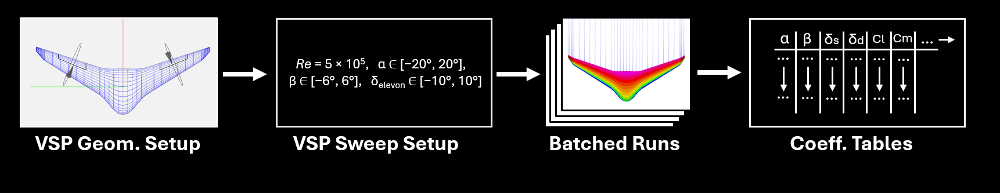
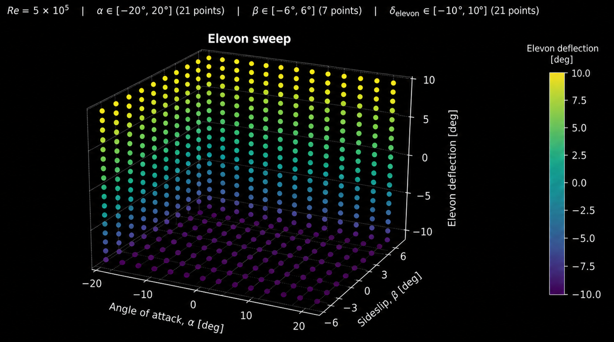
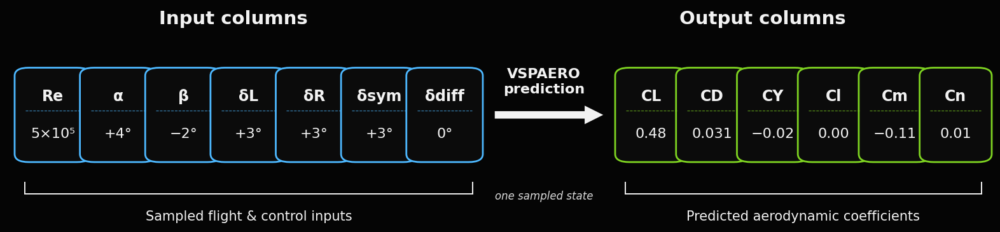

This is a placeholder page for the sparse data input stage of the project. Replace this text with a description of what data is collected, why it is sparse, and how it enters the project workflow.
You can include datasets, collection constraints, sampling diagrams, source images, acquisition hardware, or preprocessing notes here.
Sparse Aerodynamic Data Creation
This section describes the creation of the sparse aerodynamic database used as the input layer for the surrogate modeling workflow. The dataset was generated using VSPAERO over a selected envelope of flight attitude and control-surface states. Each sample point represents one aerodynamic evaluation of the aircraft at a prescribed Reynolds number, angle of attack, sideslip angle, and elevon configuration. The resulting coefficients provide a compact description of the aircraft's force and moment response at that condition.
1. VSPAERO as the Data-Generation Tool
VSPAERO is the aerodynamic solver distributed with OpenVSP. It is intended for rapid aerodynamic analysis of OpenVSP vehicle geometries, especially during conceptual and early-stage design. Unlike a full high-fidelity CFD workflow, where the user typically creates a volume mesh around the aircraft and solves the Navier-Stokes or Reynolds-averaged Navier-Stokes equations, VSPAERO uses a lower-order potential-flow formulation. This makes it much faster to run over many geometry, attitude, and control-input combinations, which is useful when the goal is to populate an aerodynamic database rather than resolve every detail of the flow field.
In this project, VSPAERO was used as a sweep engine: the aircraft geometry and reference quantities were held fixed while the flight and control variables were systematically varied. For each case, the solver produced nondimensional aerodynamic coefficients that could later be used for interpolation, surrogate model training, and flight-dynamics analysis. This makes VSPAERO well suited for the sparse-data stage of the project, because the workflow requires many coefficient evaluations over a structured design space.
Inputs to the VSPAERO workflow
Aircraft geometry: the OpenVSP model or its aerodynamic representation, including lifting surfaces and elevon/control-surface definitions.
Reference quantities: reference area, reference chord, reference span, and moment reference point used to nondimensionalize forces and moments.
Flow condition: Reynolds number, freestream direction, angle of attack, sideslip angle, and related analysis settings.
Control inputs: symmetric and differential elevon deflections, which represent different combinations of pitch and roll control authority.
Outputs used in this project
The main outputs used here were the integrated aerodynamic force and moment coefficients. These outputs are not simply raw forces and torques; they are nondimensionalized values that make the results easier to compare across conditions and easier to use inside flight-dynamics or surrogate-modeling pipelines.

Figure A. VSP geometry, sweep variables to aerodynamic coefficient database pipeline.
Why not only use CFD?
A CFD workflow is more appropriate when local flow details are important, such as boundary-layer behavior, shock structure, separated flow, viscous drag buildup, or detailed pressure distributions. However, CFD is usually more expensive to set up and run for large multidimensional sweeps. For this project, the immediate objective was to create a broad aerodynamic response map across many combinations of α, β, and elevon deflection. VSPAERO provides a practical middle ground: it can rapidly generate approximate aerodynamic coefficients over a wide sweep space, while higher-fidelity CFD or wind-tunnel data could later be used to validate, correct, or enrich selected regions of the surrogate model.
2. Sampling Domain
The sparse dataset was generated at a fixed Reynolds number of Re = 5 × 105. The aerodynamic state space was swept across angle of attack, sideslip angle, and elevon deflections. The selected intervals were chosen to cover a useful range of longitudinal, lateral-directional, and control-coupled behavior while keeping the total number of VSPAERO cases manageable.
Angle of attack, α: swept from −20° to +20° using 21 sample points. This sweep captures the primary longitudinal variation in lift, drag, and pitching moment as the aircraft rotates nose-up or nose-down relative to the freestream.
Sideslip angle, β: swept from −6° to +6° using 7 sample points. This sweep captures lateral-directional effects caused by the aircraft flying at a yawed angle relative to the incoming flow.
Elevon deflections: each elevon was swept from −10° to +10° using 21 sample points. These deflections alter the effective camber and loading of the trailing-edge control surfaces.
Control mixing: elevon inputs were evaluated through combinations of symmetric and differential deflections. Symmetric deflection corresponds to both elevons moving in the same direction, while differential deflection corresponds to the elevons moving in opposite directions.
Symmetric elevon deflection is most closely associated with pitch control because both surfaces modify the aft-wing loading in the same direction. This tends to influence CL, CD, and especially Cm. Differential elevon deflection is most closely associated with roll control because one side of the aircraft experiences a different trailing-edge deflection than the other. This tends to influence Cl and may also introduce coupled effects in CY and Cn, depending on the aircraft geometry and flight condition.
Because the dataset is sparse, it does not represent every possible state in the continuous flight envelope. Instead, it provides a structured set of anchor points. The surrogate model can then learn or interpolate between these anchors to estimate aerodynamic coefficients at unsampled combinations of attitude and control input.

Figure 1. Aerodynamic sweep domain used to create the sparse data input.
3. Data Inputs, Constraints, and Preparation
The sparse aerodynamic database can be understood as a structured collection of input conditions paired with aerodynamic coefficient outputs. The input side of the dataset defines the state of the aircraft and controls for each VSPAERO case. In this project, each sample is identified by a Reynolds number, angle of attack, sideslip angle, and elevon configuration. These values act as the independent variables that the surrogate model will later use to infer the aircraft's aerodynamic response.
3.1 Inputs: sampled aerodynamic states
The primary inputs are the sampled points in the aerodynamic/control space. Each point represents one specific flight and control condition, rather than a continuous flow-field solution. In practical terms, a single row of the sparse database may contain quantities such as Re, α, β, left elevon deflection, right elevon deflection, symmetric elevon component, and differential elevon component. The corresponding output columns then contain the aerodynamic coefficients predicted by VSPAERO for that condition.
Because the dataset is generated from a defined sweep, the input values are not arbitrary. They are organized sample points chosen to cover the operating range of interest. The α samples describe how the aircraft behaves as it pitches relative to the freestream, the β samples describe how the aircraft behaves in yawed flow, and the elevon samples describe how the aerodynamic response changes under pitch-like and roll-like control inputs. This makes the dataset especially useful for surrogate modeling because the model receives a clear mapping from control/flight inputs to aerodynamic outputs.

Figure 2. Schematic of the sparse database format- each sampled input state maps to aerodynamic coefficient outputs.
3.2 Constraints: why the dataset is sparse
The dataset is intentionally sparse because the full aerodynamic response surface is multidimensional. Even with a relatively small number of variables, the number of possible combinations grows quickly. A dense grid over Reynolds number, angle of attack, sideslip, left elevon deflection, and right elevon deflection would require a large number of aerodynamic evaluations. This becomes especially costly if the same workflow is repeated for multiple geometries, model revisions, mesh settings, or validation cases.
Sparsity also reflects practical limits in aerodynamic data generation. Some regions of the envelope may be more important than others, some combinations may be less physically relevant, and lower-order tools such as VSPAERO may be most reliable within certain ranges of attached or moderately separated flow. As a result, the sweep is designed to capture the dominant trends while avoiding an unnecessarily dense brute-force database. The surrogate model is then responsible for filling in the unsampled regions in a controlled way.
This constraint is important for interpreting the final surrogate. The surrogate should not be viewed as creating new high-fidelity physics from nothing. Instead, it learns from a limited set of aerodynamic anchor points. Its reliability depends on the quality, coverage, and consistency of those anchor points, as well as the smoothness of the underlying aerodynamic trends between them.
Figure 3. Sparse sampling strategy v. hypothetical dense aerodynamic database.
3.3 Preparation: converting VSPAERO outputs into surrogate-ready data
After the VSPAERO sweeps are completed, the raw outputs must be organized into a consistent dataset before they can be used for surrogate prediction. This preparation step includes collecting the coefficient outputs from each run, associating them with the correct input condition, and formatting the data into a table or array that can be read by the surrogate model. The preparation stage is where individual solver cases become a coherent aerodynamic database.
Important preparation tasks include checking that all intended cases completed successfully, verifying that sign conventions are consistent, confirming that symmetric and differential elevon definitions are applied correctly, and making sure each coefficient is paired with the correct input state. If duplicated points, failed solver cases, missing values, or inconsistent control labels are present, they should be identified before training or interpolation. This helps prevent the surrogate from learning artifacts caused by data formatting errors rather than actual aerodynamic behavior.
Preparation may also include light feature engineering. For example, left and right elevon deflections can be transformed into symmetric and differential components. This can make the control inputs more physically meaningful because symmetric deflection maps more naturally to pitch behavior, while differential deflection maps more naturally to roll behavior. The resulting surrogate inputs are therefore not just raw solver settings; they are organized variables chosen to reflect the aircraft's control structure.
4. Aerodynamic Coefficient Outputs
For each VSPAERO run, six nondimensional aerodynamic coefficients were extracted:
{ CL, CD, CY, Cl, Cm, Cn }
These coefficients describe the total aerodynamic forces and moments acting on the aircraft. The force coefficients, CL, CD, and CY, describe translation through the air, while the moment coefficients, Cl, Cm, and Cn, describe rotation about the aircraft body axes. Instead of treating these as isolated scalar outputs, the most useful interpretation comes from looking at how each coefficient changes as a function of angle of attack, sideslip, and elevon deflection.
4.1 Longitudinal coefficients: lift, drag, and pitching moment
The first group of outputs, CL, CD, and Cm, is most directly tied to longitudinal flight behavior. CL indicates how much lift the vehicle produces as angle of attack changes. CD captures the drag penalty associated with that flight condition and control state. Cm describes the pitching moment, which is important for trim and pitch stability. Plotting these three quantities against α provides a direct check on whether the VSPAERO-generated database behaves in a physically reasonable way.
Figure 5 should be read as the primary sanity check for the sparse aerodynamic data. A useful plot would show whether lift increases consistently over the expected range, whether drag grows as the aircraft moves toward higher-magnitude angles of attack, and whether the pitching-moment curve changes with symmetric elevon input. This figure is also useful for identifying regions where the surrogate model may need extra care, such as near high-α conditions where the response may become less linear or more sensitive to control deflection.
4.2 Control effectiveness: symmetric and differential elevon behavior
The elevon sweep was included because the project is not only interested in passive aerodynamic behavior, but also in how the aircraft responds to commanded control inputs. Symmetric elevon deflection primarily affects pitch-related behavior, especially Cm, because both trailing-edge surfaces move together and alter the overall longitudinal loading. Differential elevon deflection primarily affects roll-related behavior, especially Cl, because the left and right sides of the aircraft receive opposite control inputs.
Figure 6. Control-effectiveness plot.
Figure 6 should sit directly next to the discussion of elevon mixing because it explains why both symmetric and differential control combinations were included in the sparse dataset. If Cm changes clearly with symmetric deflection, the data captures pitch-control authority. If Cl changes clearly with differential deflection, the data captures roll-control authority. The slopes of these relationships are especially important because they indicate how strongly each control input maps to an aircraft response. If the curves are nearly linear, the surrogate may be easier to train; if they show curvature or coupling, the surrogate needs enough structure to capture that behavior.
4.3 Lateral-directional coefficients: side force, roll moment, and yaw moment
The remaining coefficients, CY, Cl, and Cn, are most useful for understanding lateral-directional behavior. These outputs become especially important when the aircraft experiences sideslip. CY describes side force, Cl describes rolling moment, and Cn describes yawing moment. Looking at these coefficients versus β helps reveal whether the aircraft has a stabilizing directional response and whether sideslip introduces roll-yaw coupling.
Figure 7 should be placed with the lateral-directional discussion because it connects the β sweep to the coefficient outputs most affected by yawed flow. A useful version would compare neutral controls against representative symmetric and differential control cases. This would make it easier to see whether the aircraft response is dominated by sideslip alone or whether elevon deflection significantly changes side force, roll moment, or yaw moment. The figure can also highlight cross-coupling that may matter later in flight-dynamics modeling, such as a differential elevon input producing both roll and yaw effects.
4.4 Summary of coefficient roles
Coefficient
Name
Aircraft relevance
CL
Lift coefficient
Represents the aircraft's nondimensional lift force. It indicates how much upward aerodynamic force the configuration produces for a given flight condition. Variation of CL with α is one of the clearest indicators of longitudinal aerodynamic behavior and is important for trim, maneuvering, and estimating available lift margin.
CD
Drag coefficient
Represents nondimensional aerodynamic drag. It is used to estimate the aerodynamic penalty of a given state or control input. Trends in CD help identify efficient operating regions, increased losses at high α, and possible drag penalties introduced by elevon deflection.
CY
Side-force coefficient
Represents lateral force generated when the aircraft is exposed to sideslip or asymmetric control effects. CY is relevant for crosswind response, lateral-directional stability, and understanding how yawed flow produces side loading on the vehicle.
Cl
Rolling-moment coefficient
Represents moment about the aircraft body x-axis. It is especially relevant for differential elevon inputs because opposite deflections on left and right surfaces can create an imbalance in lift, producing roll authority. The sign and slope of Cl with differential deflection indicate how effectively the aircraft can command roll.
Cm
Pitching-moment coefficient
Represents moment about the aircraft body y-axis. It is central to longitudinal stability and trim. The variation of Cm with α helps indicate static pitch stability, while variation with symmetric elevon deflection indicates pitch-control authority.
Cn
Yawing-moment coefficient
Represents moment about the aircraft body z-axis. It is used to evaluate directional stability and yaw response. Cn trends with β help show whether the aircraft tends to yaw back into the relative wind or away from it, while differential control inputs may introduce yaw-roll coupling.
The placement of Figures 5 through 7 is meant to move from the most intuitive aircraft behavior to the more coupled behavior. Figure 5 explains the baseline longitudinal response, Figure 6 isolates control authority from elevon deflection, and Figure 7 shows how lateral-directional coefficients vary with sideslip and control coupling. Together, these plots would make the sparse dataset easier to interpret before it is passed into the surrogate prediction stage.
5. Purpose in the Surrogate Workflow
The VSPAERO results form the sparse input database for the surrogate prediction stage. Rather than evaluating the full continuous aerodynamic space directly, this workflow uses a finite set of sampled aerodynamic states to train or construct a surrogate model. The surrogate can then estimate aerodynamic coefficients at unsampled combinations of angle of attack, sideslip, and elevon deflection.
This approach is useful because the complete aerodynamic response surface is multidimensional. Even a moderate number of variables can quickly create a large number of possible cases. By using a sparse but structured dataset, the project can reduce the number of direct aerodynamic analyses while still preserving enough information to approximate trends across the operating envelope.